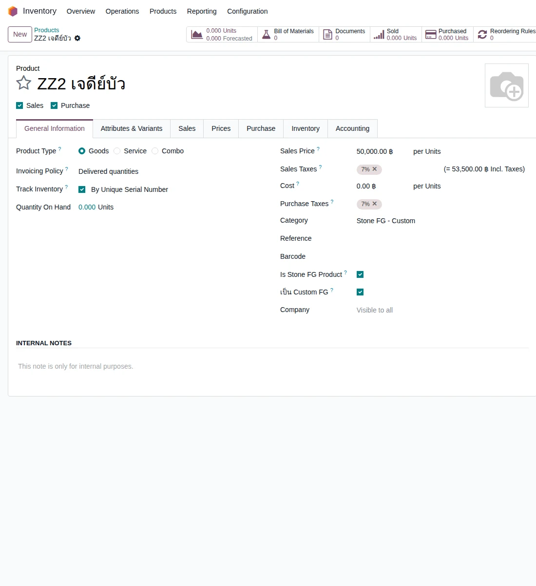
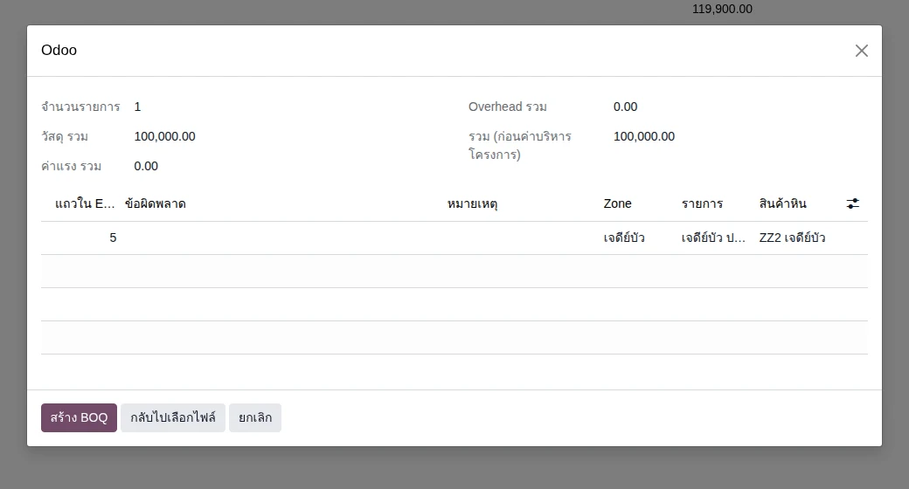
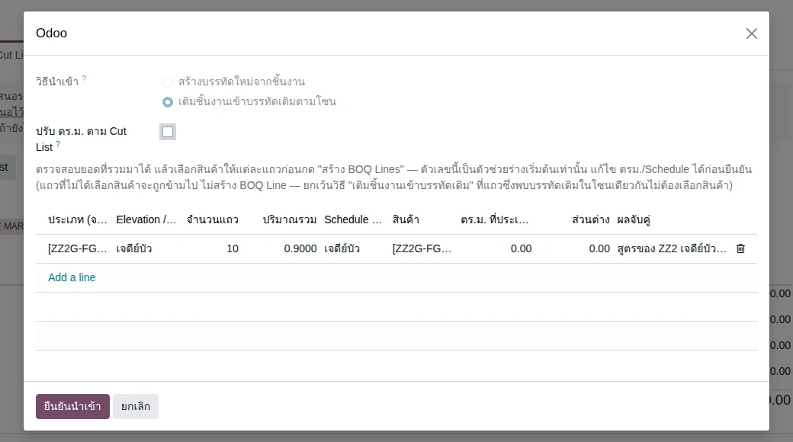
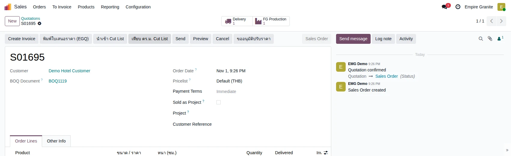
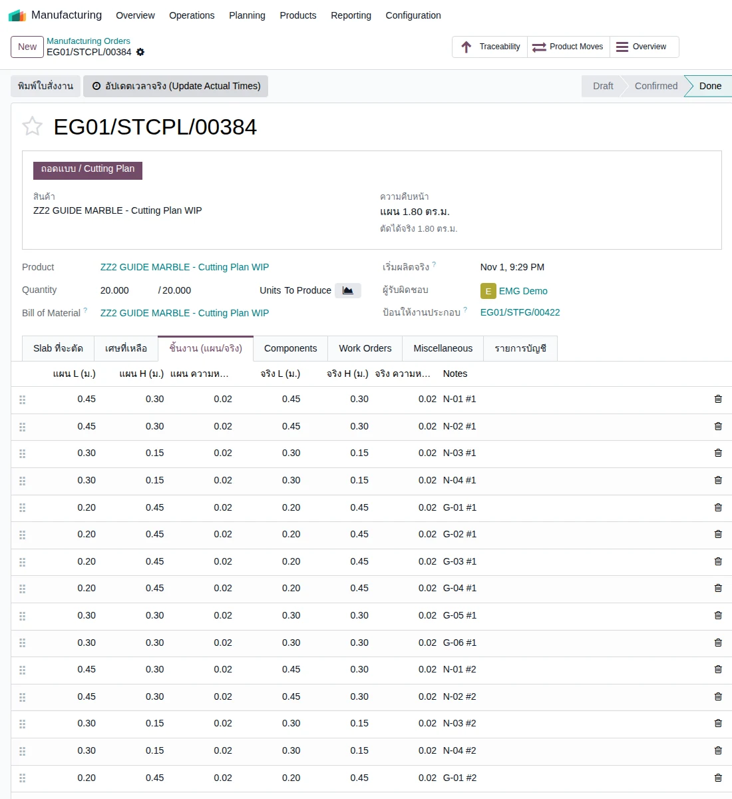
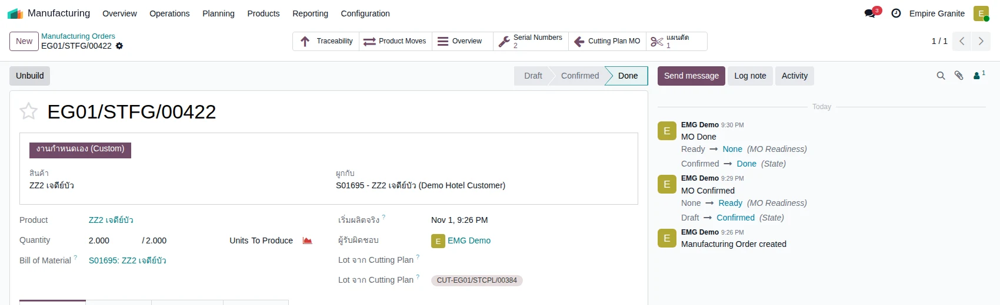
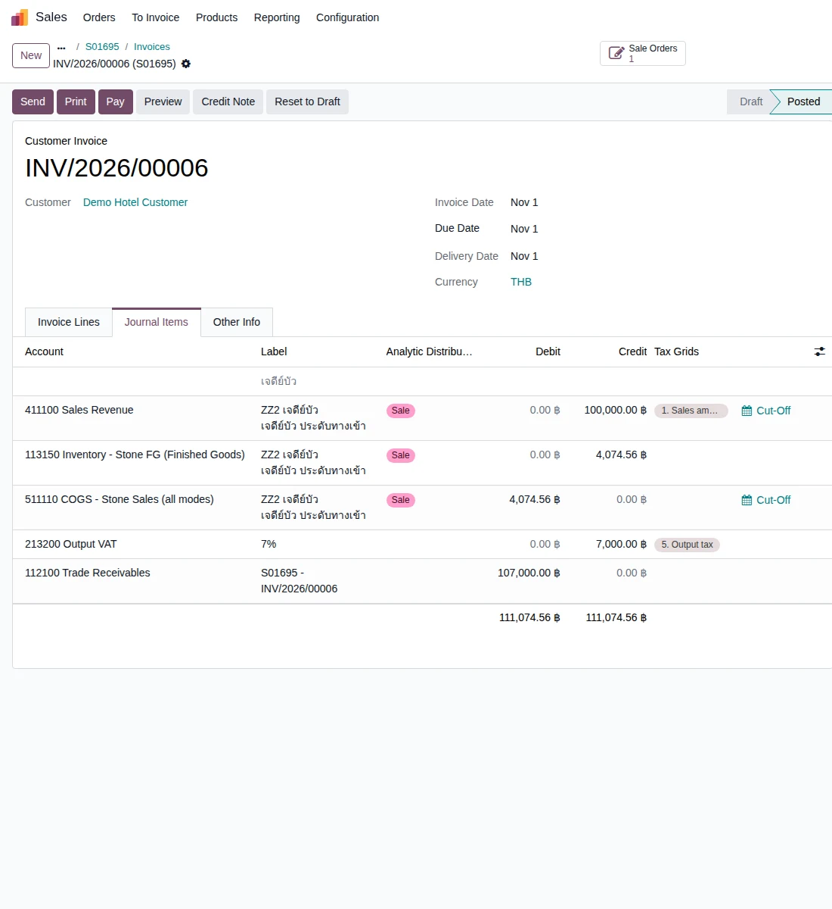
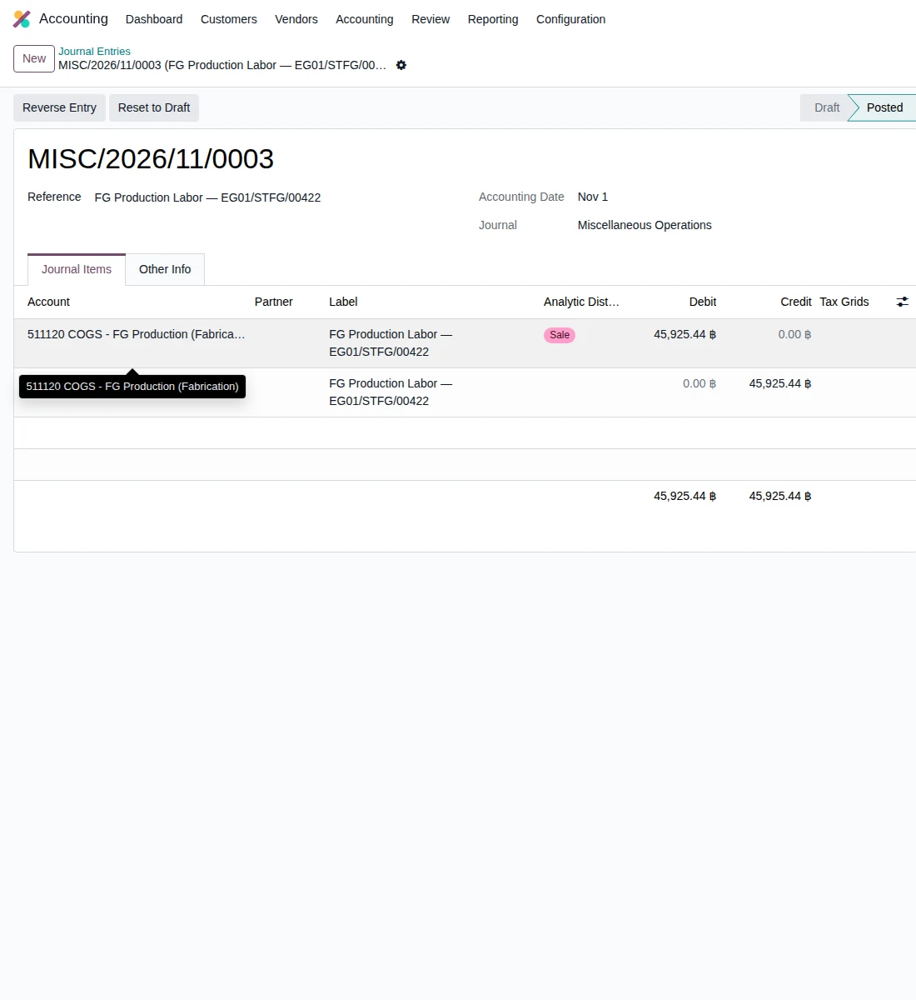

Empire Stone × Empire Granite — QA
Golden Path — Custom FG (เจดีย์บัว): จาก BOQ และ Cut List ถึงใบแจ้งหนี้
อัปเดตล่าสุด: 1 พฤศจิกายน 2569 (2026-11-01) · รันจริงบน eg-tst ผ่านหน้าจอ ใช้ผู้ใช้ emgdemo บริษัท Empire Granite
เอกสารเดียวสำหรับเรื่อง Custom FG (สินค้าสั่งทำขายเป็นชิ้นราคาคงที่): ตั้งสินค้า · นำเข้า BOQ และ Cut List · ใบเสนอราคาและยืนยัน · ตัดหินและประกอบ · ส่งของ · ใบแจ้งหนี้และต้นทุน ทุกเคสเขียนให้ผู้ใช้ไม่เทคนิคทำตามได้ ไม่รวมเคสกรอกผิดหรือดักข้อผิดพลาด ข้อมูลตัวอย่างขึ้นต้นด้วย ZZ
8Test Case ทั้งหมด
4หมวด
8High Priority
0Medium Priority
0Low Priority
เอกสารนี้เป็นฉบับใหม่ของเรื่อง Custom FG
- ทำตามทีละขั้นด้วยคู่มือ คู่มือกดตาม Custom FG (มีเหตุผลของแต่ละค่าที่กรอกและไฟล์ตัวอย่าง) · เอกสารนี้ใช้ตรวจผล
- ต้องทำ คู่มือกดตาม Setup ระบบ ตอน 2 มาก่อน (มีสินค้า ZZ2 GUIDE MARBLE Countertop) และมี Slab Available อย่างน้อย 1 แผ่นจาก Golden Path Block
- ขอบเขต 8 เคส: ตั้งสินค้า BOQ และ Cut List 3 เคส · ใบเสนอราคาและสั่งผลิต 1 เคส · ตัดหินและประกอบ 2 เคส · ส่งของ ใบแจ้งหนี้ และต้นทุน 2 เคส
- เรื่อง Custom FG ในเอกสารเดิม (Countertop และ Custom FG) ไม่ได้แก้ ยังใช้ได้ตามเดิม (ใช้ Rate Library ซึ่งเลิกใช้แล้ว)
A. ตั้งสินค้า BOQ และ Cut List
ตั้งสินค้า Custom FG · นำเข้า BOQ · นำเข้า Cut List เป็นสูตรของสินค้า · 3 test cases
| TC ID | Scenario | Precondition | Steps | ข้อมูลตัวอย่าง | Expected Result | Priority | ภาพหน้าจอ |
|---|---|---|---|---|---|---|---|
| TC-GP-CFG-01 | ตั้งสินค้า Custom FG (เจดีย์บัว) ให้ติดตามด้วย Serial ต้องติ๊ก "เป็น Custom FG" ไม่เช่นนั้นตอนนำเข้า BOQ ระบบแจ้งว่า "ไม่ใช่สินค้า FG ที่นำเข้าได้" · ไม่ต้องเลือก FG Raw Material เพราะชิ้นหินมาจาก Cut List |
เข้าระบบเป็น Empire Granite · มีสิทธิ์เข้าเมนู Inventory |
|
ชื่อ ZZ2 เจดีย์บัว · Goods · By Unique Serial Number · Sales Price 50000 · Category Stone FG - Custom | บันทึกสำเร็จ · Track Inventory = By Unique Serial Number · Sales Price 50,000.00 · Category = Stone FG - Custom · ช่อง Is Stone FG Product และ เป็น Custom FG ติ๊กอยู่ | High |  |
| TC-GP-CFG-02 | นำเข้า BOQ ของเจดีย์บัว (ราคาคงที่ต่อชิ้น) ไฟล์ตัวอย่างใส่ Overhead 0% ทุกแถว ราคาจึงเป็น 50,000 ต่อชิ้นตามที่ตั้ง · ชื่อโซนต้องจำไว้ใช้ใน Cut List |
ทำ TC-GP-CFG-01 เสร็จแล้ว · ไฟล์ boq-import-zz2-chedi.xlsx |
|
Customer = Demo Hotel Customer · ไฟล์ = boq-import-zz2-chedi.xlsx (โซน เจดีย์บัว · ZZ2 เจดีย์บัว · 2 ชิ้น · 50,000) | หน้าตัวอย่างไม่มีแถวแดง · จำนวนรายการ 1 · วัสดุรวม 100,000.00 · รวม 100,000.00 · ได้ BOQ ใหม่ (เช่น BOQ1119) แท็บ ① มี 1 บรรทัด 2.00 ชิ้น × 50,000.00 = 100,000.00 | High |  |
| TC-GP-CFG-03 | นำเข้า Cut List ของเจดีย์บัว 1 ชิ้น เป็นสูตรของสินค้า Cut List ใส่ชิ้นหินของสินค้า 1 ชิ้น ระบบคูณตามจำนวนที่ขายเอง · "รายการ" ในไฟล์ต้องเป็นชื่อเดียวกับที่เทมเพลตให้ ถ้าไม่ตรงช่องสินค้าในหน้าตัวอย่างว่างและกดยืนยันไม่ผ่าน · ชิ้นหินไม่ขึ้นใบเสนอราคา ราคาไม่เปลี่ยน |
ทำ TC-GP-CFG-02 เสร็จแล้ว · ไฟล์ cutlist-import-zz2-chedi.xlsx |
|
รายการที่ใช้ = ZZ2 GUIDE MARBLE Countertop · ไฟล์ = cutlist-import-zz2-chedi.xlsx (10 ชิ้น โซน เจดีย์บัว) | หน้าตัวอย่าง: โซน เจดีย์บัว จำนวนแถว 10 ปริมาณรวม 0.9000 ตร.ม. ผลจับคู่ "สูตรของ ZZ2 เจดีย์บัว" · หลังยืนยัน: แท็บ ① มีบรรทัดสูตร [ZZ2G-FG] ZZ2 GUIDE MARBLE Countertop 0.90 m² ช่องรวม 0.00 · ยอดรวม BOQ ยัง 100,000.00 · แท็บ ③ ชิ้นงานที่นำเข้าแล้ว 10 | High |  |
B. ใบเสนอราคาและสั่งผลิต
ออกใบเสนอราคาจาก BOQ · ยืนยัน ระบบสร้างใบตัดหินและใบประกอบ · 1 test case
| TC ID | Scenario | Precondition | Steps | ข้อมูลตัวอย่าง | Expected Result | Priority | ภาพหน้าจอ |
|---|---|---|---|---|---|---|---|
| TC-GP-CFG-04 | ออกใบเสนอราคาจาก BOQ แล้ว Confirm ระบบสร้างใบสั่งผลิตให้ครบ บรรทัดสูตรไม่ขึ้นใบเสนอราคาและ PDF · ถ้าขึ้นหน้าต่างเตือนว่าไม่มีของ กด Confirm ต่อ · ใบประกอบ Confirm ไม่ได้จนกว่าใบตัดหินจะเสร็จ |
ทำ TC-GP-CFG-03 เสร็จแล้ว |
|
- | ใบเสนอราคา (เช่น S01695) ก่อน VAT 100,000.00 VAT 7% 7,000.00 รวม 107,000.00 · หลัง Confirm เป็น Sales Order มีปุ่ม Delivery 1 และ FG Production 1 · ได้ใบประกอบ EG01/STFG/00422 (2 Units ป้าย งานกำหนดเอง) และใบตัดหิน EG01/STCPL/00384 (20 ชิ้น แผน 1.80 ตร.ม.) สถานะ Draft | High |  |
C. ตัดหินและประกอบ
ตัดตามแผน · ประกอบเป็นเจดีย์บัวทีละ Serial · 2 test cases
| TC ID | Scenario | Precondition | Steps | ข้อมูลตัวอย่าง | Expected Result | Priority | ภาพหน้าจอ |
|---|---|---|---|---|---|---|---|
| TC-GP-CFG-05 | ใบตัดหิน — ย้ายไปสถานีตัด Confirm คัดลอกแผนเป็นขนาดจริง แล้วถอดแบบเสร็จ ปุ่ม คัดลอกแผนเป็นขนาดจริง เติมขนาดจริงให้เท่าแผนทุกแถว ช่างแก้เฉพาะชิ้นที่ตัดไม่ตรงแบบ · ไม่ได้บันทึกเศษ ต้นทุน Slab ทั้งแผ่นจึงเข้า WIP ทั้งหมด · ความหนาในแผน 0.02 ม. ต่างจาก Slab ที่หนา 0.03 ม. (ข้อสงสัยที่ค้างถามลูกค้า) |
ทำ TC-GP-CFG-04 เสร็จแล้ว · มี Slab ZZ2 GUIDE MARBLE ที่ Available อย่างน้อย 1 แผ่น |
|
Slab ที่ระบบเลือก = BLK-26-1482-5 (1.50 × 2.90 × 0.030 ม. = 4.35 ตร.ม.) · ชิ้นงาน 20 ชิ้น รวม 1.80 ตร.ม. | พื้นที่งาน 1.80 ต้องใช้รวมเผื่อเสีย 1.98 แผ่นที่เลือก 4.35 · หลัง Confirm สถานะ Confirmed · หลังถอดแบบเสร็จ Done แผน 1.80 ตัดได้จริง 1.80 ตร.ม. · ได้ Lot WIP CUT-EG01/STCPL/00384 20 ชิ้นที่ Stone Production มูลค่า 4,074.56 บาท | High |  |
| TC-GP-CFG-06 | ใบประกอบ — Confirm แล้ว Produce All ได้เจดีย์บัวทีละ Serial Confirm ใบประกอบไม่ได้จนกว่าใบตัดหินที่ผูกกันทุกใบจะ Done · ใบประกอบที่ Done มีปุ่ม Unbuild (ยังไม่ได้ทดลอง) |
ทำ TC-GP-CFG-05 เสร็จแล้ว |
|
- | Component Status = Available · ช่อง Lot จาก Cutting Plan = CUT-EG01/STCPL/00384 · หลัง Produce All สถานะ Done Quantity 2.000 / 2.000 · สมาร์ทปุ่ม Serial Numbers 2 (ในรอบทดสอบ 0000008 และ 0000009) | High |  |
D. ส่งของ ใบแจ้งหนี้ และต้นทุน
ส่งของตาม Serial · ใบแจ้งหนี้และต้นทุนขาย · ค่าแรงตามกติกา 50% · 2 test cases
| TC ID | Scenario | Precondition | Steps | ข้อมูลตัวอย่าง | Expected Result | Priority | ภาพหน้าจอ |
|---|---|---|---|---|---|---|---|
| TC-GP-CFG-07 | ส่งของตาม Serial แล้วออกใบแจ้งหนี้ ตรวจรายการบัญชี ถ้ากด Create Invoice ก่อนส่งของ ระบบแจ้งว่าไม่มีรายการให้ออกใบแจ้งหนี้ ให้ Validate ใบส่งของก่อน |
ทำ TC-GP-CFG-06 เสร็จแล้ว |
|
ใบส่งของ EG01/OUT/00718 · ใบสั่งขาย S01695 | ใบส่งของ Ready ก่อนกด เป็น Done หลัง Validate 2.000 Units · ใบแจ้งหนี้ (เช่น INV/2026/00006) Posted 2.000 × 50,000.00 · ก่อน VAT 100,000.00 · VAT 7,000.00 · รวม 107,000.00 · Journal Items: เดบิต 112100 ลูกหนี้ 107,000.00 · เครดิต 411100 รายได้ 100,000.00 · เครดิต 213200 VAT 7,000.00 · เดบิต 511110 ต้นทุนขาย 4,074.56 · เครดิต 113150 สต็อก FG 4,074.56 | High |  |
| TC-GP-CFG-08 | ตรวจรายการบัญชีค่าแรงของใบประกอบ (กติกาต้นทุนไม่ต่ำกว่า 50%) ข้อสังเกตที่ควรถามลูกค้า: ต้นทุนรวมที่ลงบัญชี 50,000 (วัสดุ 4,074.56 + ค่าแรง 45,925.44) = 50% ของรายได้ ไม่ใช่ต้นทุนจริง เพราะระบบมีกติกาต้นทุนไม่ต่ำกว่า 50% แล้วเติมส่วนต่างเป็นค่าแรง · ค่าแรงและวัสดุสิ้นเปลืองที่อยู่ใน BOQ เป็นประมาณการเท่านั้น ไม่ได้ลงบัญชี · ค่าแรงลงตอนผลิตเสร็จ ไม่อยู่ในใบแจ้งหนี้ |
ทำ TC-GP-CFG-06 เสร็จแล้ว |
|
รายได้บรรทัดงาน = 100,000 · วัสดุ = 4,074.56 · ต้นทุนขั้นต่ำ 50% | รายการ (เช่น MISC/2026/11/0003) เดบิต 511120 ค่าแรง 45,925.44 เครดิต 212300 ค้างจ่าย 45,925.44 (= 50% × 100,000 − 4,074.56) | High |  |